Travel & Notes - Guide de l'utilisateur
- Pourquoi Travel & Notes
- Quelques explications sur les termes utilisés
- Avant de commencer à utiliser Travel & Notes
- [Menus contextuels](#ContextMenus]
- Interface
- Boites d'édition
- Trajets et points de passage
- Créer un point de passage
- Ajouter un point de passage avec un glisser/déposer
- Modifier un point de passage
- Supprimer un point de passage
- Renommer un point de passage ou changer son adresse
- Choisir un mode de parcours et un fournisseur d'itinéraire
- Calcul de l'itinéraire
- Sauver ou abandonner les modifications
- Profil d'un trajet
- Itinéraire en train
- La boite d'édition des propriétés d'un trajet
- Imprimer les cartes d'un trajet
- Notes
- Créer une note de voyage
- Modifier l'ordre des notes de voyage
- Créer une note de trajet
- Consulter une note
- Modifier le contenu d'une note
- Effacer une note
- Déplacer l'icône d'une note
- Modifier la latitude et la longitude d'une note
- Transformer une note de trajet en note de voyage
- Transformer une note de voyage en note de trajet
- Créer une note pour chaque manœuvre du trajet
- La boite d'édition d'une note
- Menu des fonds de carte
- Livre de voyage
- Préparer un voyage et le consulter depuis internet
- Viewer
Pourquoi Travel & Notes
Je pars de temps en temps en voyage en vélo pour plusieurs semaines, parfois dans des régions isolées. Ce genre de voyage ne s'improvise pas, même si il y a toujours une part d'imprévu. Il me fallait un outil pour préparer mon itinéraire à partir de la carte et pouvoir y ajouter des notes.
Oui, je sais, il y a des tas d'applications qui permettent de faire un itinéraire d'un point à un autre, mais aucune ne me donne vraiment satisfaction: je ne cherche pas souvent le trajet le plus court - parfois il s'agit même d'un trajet circulaire - et en général on est limité à quelques centaines de kilomètres.
En final , il est aussi important de pouvoir enrégistrer ce qui a été préparé car cela ne se fait pas en quelques minutes.Il faut aussi pouvoir imprimer le résultat. Dans certaines région isolées, il n'y a pas toujours de réseau mobile ni de possibilité de recharger une batterie. Une bonne vieille copie papier est souvent précieuse.
Quelques explications sur les termes utilisés
Un trajet relie deux points. Sur la carte, il est représenté par une polyligne.
Un itinéraire est la description des différents changements de direction nécessaires pour parcourir le trajet. Chaque changement de direction est une manœuvre.
Un voyage est constitué de un ou plusieurs trajets. Ceux-ci ne doivent pas obligatoirement se toucher à leur extrémités. Il peut également y avoir plus de deux trajets partant d'un même point.
Dans un voyage, certains trajets peuvent être chainés entre eux. Dans ce cas les différents trajets chainés seront considérés comme n'en faisant qu'un seul pour le calcul des distances. Une seule chaine peut-être créée par voyage, mais il n'est pas obligatoire que tous les trajets soient inclus dans la chaine.
Une note est un ensemble d'informations qui concerne un point précis sur la carte ou sur un trajet. Une note est composée d'une icône, d'un 'tooltip', d'un texte libre, d'une adresse, d'un lien et d'un numéro de téléphone. Aucune de ces informations n'est obligatoire, à l'exception de l'icône, qui est utilisée pour représenter la note sur la carte. Cette icône peut être une image, une photo, un texte...
Le livre de voyage est une page HTML qui regroupe toute l'information du voyage: les notes, les trajets et les itinéraires.
Avant de commencer à utiliser Travel & Notes
Si vous utilisez Travel & Notes uniquement pour créer des notes, vous pouvez ignorer toute la partie qui concernent les clefs d'accès. Celles-ci ne sont utilisées que pour le calcul des trajets et l'affichage de certaines cartes.
Travel & Notes ne calcule pas lui-même les itinéraires des trajets. Il se connecte chez un fournisseur d'itinéraires pour obtenir cet itinéraire. Les différents fournisseurs d'itinéraire qu'il est possible d'utiliser actuellement sont GraphHopper, Stadia Maps, Mapbox, OpenRouteService et OSRM. Il est également possible de tracer une polyligne entre deux endroits, sans suivre de chemins. Un itinéraire en train entre deux gares peut aussi être ajouté, à condition que cet itinéraire soit encodé dans Openstreetmap, en respectant les règles des transports publics version 2.
Pour GraphHopper, Stadia Maps, OpenRouteService et Mapbox il est nécessaire de posséder une clef d'accès ( API Key ) pour se connecter au serveur. Consultez les sites internet de ces différents fournisseurs pour obtenir une clef d'accès.
Pour l' affichage de certaines cartes (Thunderforest, Lantmäteriet - Suède, Mapbox), une clef d'accès est également indispensable. Pour d'autres cartes, ce n'est pas nécessaire (OpenStreetMap, vue aérienne ESRI, IGN - Belgique, Kartverket - Norvège, Maanmittauslaitos - Finlande).
Vous devez également lire correctement les conditions d'utilisation des clefs d'accès et vérifier que ce que vous faites avec Travel & Notes correspond à ces conditions d'utilisation.
Vous êtes également responsable de l'utilisation qui est faite de vos clefs d'accès. N'oubliez pas qu'il peut y avoir une facturation qui est faite sur la base de ces clefs d'accès. Ne les donnez pas à n'importe qui, ne les laissez pas trainer n'importe où.
Comment introduire vos clefs d'accès dans Travel & Notes
Les clefs d'accès sont gérées à partir de la boite de dialogue des clefs d'accès. Pour afficher celle-ci, cliquez sur le bouton 🔑 dans la barre d'outil en haut de l'interface.

Pour chaque fournisseur de service, vous devez indiquer à gauche le nom de ce fournisseur et à droite la clef d' accès. Les différents noms possibles actuellement sont 'GraphHopper', 'Lantmateriet', 'Mapbox', 'MapzenValhalla', 'OpenRouteService' et 'Thunderforest' (insensible au majuscules/minuscules).
Utilisez le bouton + pour ajouter un fournisseur de service et le bouton ❌ à droite pour supprimer celui-ci.
Quand vos clefs d'accès sont introduites, appuyez sur le bouton 🆗 pour terminer. Vos clefs sont sauvegardées dans le "sessionStorage" du browser et disponibles jusqu'à la fermeture de celui-ci.
Il est possible de sauvegarder les clefs d'accès dans un fichier, protégé par un mot de passe ou non protégé.
Attention: la page doit être servie en HTTPS pour sauvegarder dans un fichier protégé par un mot de passe.
Le bouton 🔄 permet de recharger le fichier des clefs d'accès depuis le serveur web.
Le bouton 💾 à gauche de la boite de dialogue permet de sauver les clefs d'accès dans un fichier protégé par mot de passe. Celui-ci doit contenir au moins 12 caractères dont au moins une majuscule, une minuscule, un chiffre et un autre caractère.
Le bouton 📂 à gauche de la boite de dialogue remplace toutes les clefs d'accès de la boite de dialogue par le contenu d'un fichier protégé par mot de passe.
Ces deux boutons ne sont présents que si toutes les conditions pour pouvoir sauvegarder/restaurer les clefs avec un mot de passe sont réunies.
Le bouton 💾 à droite de la boite de dialogue permet de sauver les clefs d'accès dans un fichier non protégé par mot de passe.
Le bouton 📂 à droite de la boite de dialogue remplace toutes les clefs d'accès de la boite de dialogue par le contenu d'un fichier non protégé par mot de passe.
Si un fichier protégé par un mot de passe et nommé APIKeys est placé dans le même répertoire que Travel & Notes sur le serveur, Travel & Notes vous demandera le mot de passe à l'ouverture pour pouvoir utiliser les clefs contenues dans ce fichier.
Pour les geeks et les paranos voyez aussi ,dans le guide d'installation et dans le fichier TravelNotesConfig.json:
- APIKeys.showDialogButton pour afficher ou masquer le bouton 🔑 dans la barre d'outils
- APIKeys.saveToSessionStorage pour sauver ou non les clefs dans le sessionStorage
- APIKeys.showAPIKeysInDialog pour montrer ou masquer les clefs comme un mot de passe dans la boite de dialogue
- APIKeys.dialogHaveUnsecureButtons pour afficher ou masquer les boutons 💾 et 📂 à droite
L'ancienne méthode consistant à introduire les clefs d'accès via l'url continue à fonctionner mais sera supprimée dans une prochaine version:
- à la fin de l'url de la page web chargeant Travel & Notes, vous devez introduire un ? suivi du nom du fournisseur suivi de ProviderKey suivi de = suivi de votre clef d'accès. Plsieurs clef d'accès peuvent être introduites simultanément en les séparants par un &.
Exemple:
https://www.example.org/TravelNotes/?MapboxProviderKey=votre_clef_accessMapbox&GraphHopperProviderKey=votre_clef_acces_GraphHopper
Dès que Travel & Notes détecte des clefs d'accès dans l'url, celles-ci sont enrégistrées dans le sessionStorage et effacée de l'url. Elles ne sont donc plus visibles à l'écran. Cependant, rappelez-vous qu'une personne mal intentionnée peut toujours les retrouver dans l'historique du navigateur, à moins que vous n'utilisiez le mode navigation privée de votre browser.
Menus contextuels
Tous les objets de la carte (points de passage, notes, trajets, carte) ont un menu contextuel. Toutes les commandes relatives à ces objets se trouvent dans ces menus contextuels.
Les mêmes menus se retrouvent dans l'interface utilisateur à droite de l'écran. Un clic droit sur une route dans la liste des routes affichera un menu contextuel pour cette route, un clic droit sur une note dans la description de l'itinéraire ou dans la liste des notes de voyage affichera un menu contextuel pour cette note et un clic droit sur une manœuvre dans la description de l'itinéraire affichera un menu contextuel pour cette manœuvre.
Interface
Lorsque la carte s'affiche, seul un petit rectangle noir est est visible dans le coin supérieur de la carte:

Déplacez la souris sur ce rectangle pour voir l'interface complète:
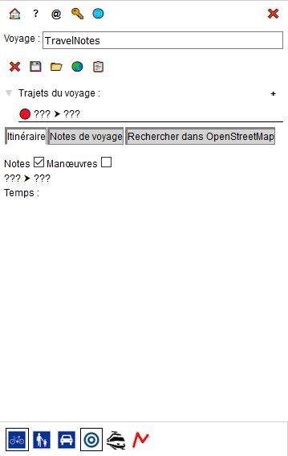Barre d'outils en haut de l'interface
En haut de l'interface se trouve une première barre d'outils:
- le bouton 🏠 redirige vers votre page d'accueil
- le bouton ? redirige vers la page d'aide sur Github
- le bouton @ redirige vers une page de contact. Par défaut, c'est la page des issues de Travel & Notes sur Github. L'url peut être modifiée via le fichier TravelNotesConfig.json (travelNotesToolbarUI.contactMail)
- le bouton 🔑 affiche la boite de dialogue des clefs d'accès
- le bouton 🌐 active ou désactive la localisation.
- le bouton 📌 affiche l'interface en permanence.
Voyage
Nom du voyage
Dans cette boite d"édition vous pouvez donner un nom au voyage. Ce nom sera par la suite proposé comme nom par défaut pour tous les fichiers que vous créerez à partir de ce voyage.
Boutons de la barre d'outils "Voyage"
- le bouton ❌ efface toutes les données du voyage et commence l'édition d'un nouveau voyage.
- le bouton 💾 sauve le voyage en cours d'édition dans un fichier sur votre ordinateur
- le bouton 📂 ouvre un voyage préalablement sauvé dans un fichier
- le bouton 🌏 ouvre un voyage préalablement sauvé dans un fichier et inclut tous les trajets et toutes les notes de ce voyage dans le voyage en cours d'édition
- le bouton 📋 ouvre le livre de voyage
Trajets du voyage
Dans cette partie, les différents trajets du voyage sont affichés.
- les boutons ▶ ou ▼ réduisent ou agrandissent la liste des trajets
- le bouton + ajoute un nouveau trajet au voyage
Pour chaque trajet, un clic droit sur celui-ci affiche un menu contextuel contenant des commandes qui permettent de faires des opérations sur le trajet.
Il est aussi possible de faire du glisser / déposer pour réordonner les différents trajets.
Lorsque un trajet est en cours de modification, une icône 🔴 est présente à gauche de celui-ci. De même, Lorsque un trajet est chainé, une icône ⛓ est présente à gauche.
Par défaut, le nom d'un trajet est le nom et l'adresse du point de départ suivi de ⮞ suivi du nom et de l'adresse du point d'arrivée. Il est possible de modifier ce nom en sélectionnant la commande 'Modifier les propriétés de ce trajet' dans le menu contextuel.
Itinéraire et notes
Cette partie comprend les manœuvres de l'itinéraire ainsi que les notes liées au trajet. Vous pouvez choisir ce que vous désirez voir en cochant les notes et / ou les manœuvres
Lorsque la souris est placée sur une ligne de l'itinéraire, un marqueur est affiché à cet endroit sur la carte.
Un clic droit sur une ligne de l'itinéraire affichera un menu contextuel affichant des commandes qui permettent de faires des opérations sur la manœuvre ou la note.
Barre d'outils des modes de parcours et des fournisseurs d'itinéraire
Les différents modes de parcours (vélo, piéton, voiture,train ou ligne) ainsi que les différents fournisseurs d'itinéraires sont sélectionnés sur cette barre d'outils.

Les boutons bleus à gauche permettent de sélectionner le mode de parcours, les autres boutons sélectionnent les fournisseurs d'itinéraire.
Seuls les boutons utilisables sont visibles dans la barre d'outils:
- les modes de parcours dépendent du fournisseur d'itinéraire sélectionné
- un fournisseur d'itinéraire n'est présent que si le plugin correspondant est installé et si la clef d'accès pour ce fournisseur est connue (qund une clef d'accès est nécessaire).
Boites d'édition
Parfois, une boite d'édition peut masquer un objet de la carte que l'on désire consulter. Il est toujours possible de glisser / déposer une boite d'édition en la saississant par la barre dans la partie supérieure.
Trajets et points de passage
Pour ajouter, modifier ou supprimer des points de passage, il est nécessaire d'éditer le trajet depuis l'interface ou via le menu contextuel du trajet si celui-ci existe déjà.
Les autres modifications (notes, propriétés du trajet) peuvent se faire, que le trajet soit édité ou non.
Créer un point de passage
Pour créer un point de passage, faites un clic droit sur la carte à l'endroit souhaité et choissisez "Sélectionner cet endroit comme point de départ", "Sélectionner cet endroit comme point intermédiaire" ou "Sélectionner cet endroit comme point d'arrivée" dans le menu:
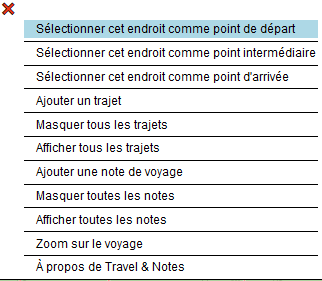Une icône verte (pour le point de départ), orange (pour un point intermédiaire) ou rouge (pour le point de fin) est ajoutée à la carte à l'endroit choisi.
Un point intermédiaire ajouté via le menu contextuel sera toujours ajouté à la fin de la liste des points intermédiaires.
Ajouter un point de passage avec un glisser/déposer
Amenez la souris sur le trajet pour voir apparaître un point de passage temporaire gris. En faisant ensuite un glisser / déposer de celui-ci, le point de passage est ajouté au trajet.
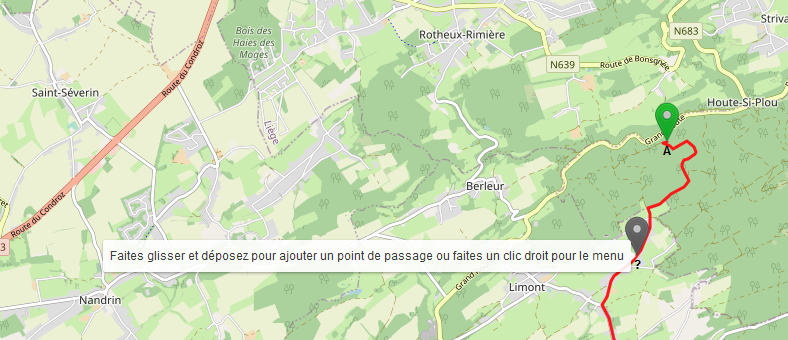Modifier un point de passage
Faites un glisser / déposer du point de passage sur la carte pour modifier un point de passage
Supprimer un point de passage
Faites un clic droit sur le point de passage et choisissez "supprimer ce point de passage" dans le menu. Il n'est pas possible de supprimer le point de départ ni le point de fin. Seul un glisser / déposer est possible.
Renommer un point de passage ou changer son adresse
Quand un point de passage est créé, son adresse est recherchée avec Nominatim. Si un nom, tel que un nom de magasin ou d'immeuble est trouvé par Nominatim, celui-ci sera également ajouté.
Vous pouvez modifier ce nom et cette adresse en faisant un clic droit sur le point de passage et en sélectionnant "Modifier les propriétés de ce point de passage" dans le menu contextuel.
À noter cependant que chaque fois que le point de passage est déplacé, le nom et l'adresse seront modifiés par Nominatim et vos modificatons perdues. Il vaut donc mieux faire ces changements quand vous êtes certain de ne plus déplacer ce point de passage.
Choisir un mode de parcours et un fournisseur d'itinéraire
Utilisez les boutons dans le bas du contrôle pour modifier le mode de déplacement (vélo, piéton, voiture ou train) ainsi que le fournisseur de trajet.
Calcul de l'itinéraire
Lorsque le point de départ et le point de fin sont connus, l'itinéraire est calculé et affiché sur la carte. Il en est de même chaque fois qu'un point intermédiaire est ajouté ou qu'un point de passage est déplacé.
La description de l'itinéraire est également affichée dans la partie "Itinéraire et notes".
Sauver ou abandonner les modifications
Lorsque l'édition d'un trajet est terminée, il faut sauver celle-ci. Faites un clic droit sur le trajet et sélectionnez 'Sauver les modifications de ce trajet' dans le menu contextuel.
Il est également possible d'abandonner l'édition d'un trajet et de revenir à la situation avant modifications avec la commande 'Abandonner les modifications de ce trajet'. Attention, toutes les modifications seront perdues, y compris les propriétés modifiées et les notes ajoutées depuis le début de l'édition.
Profil d'un trajet
Lorsque un trajet est calculé avec GraphHopper ou OpenRouteService, il est possible d'afficher un profil de ce trajet. Faites un clic droit sur le trajet et sélectionnez "Voir le profil du trajet" dans le menu contextuel.
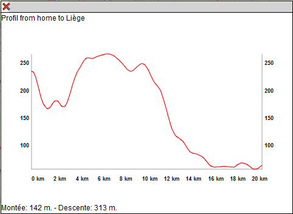Il peut y avoir plusieurs fenêtres affichant des profils ouvertes.
Il est possible de déplacer un profil sur l'écran en faisant un glisser/déposer de la barre supérieure de la fenêtre.
Itinéraire en train
Reportez vous à la documentation de leaflet.TravelNotesPublicTransport pour plus d'explications sur la façon de créer un itinéraire en train.
La boite d'édition des propriétés d'un trajet
Faites un clic droit sur le trajet et sélectionnez "Modifier les propriétés de ce trajet" dans le menu contextuel.
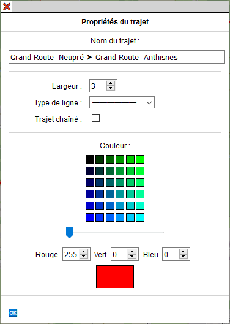Vous pouvez tout d'abord modifier les noms du trajet et remplacer le nom proposé par le programme par un nom de votre choix.
Notez que quand le nom a été modifié, les adresses ne seront plus ajoutées au nom, même si vous modifiez les points de départ et d'arrivée.
Il est également possible de modifier la largeur du trajet ainsi que le type de ligne et également chainer le trajet au voyage.
Enfin vous pouvez modifier la couleur utilisée pour afficher le trajet. Sélectionnez une couleur parmi les 6 rangées de boutons de couleur. La tirette sous les boutons de couleur ajoute plus ou moins de nuance de rouge dans les couleurs proposées.
Chaque nuance de rouge, vert et bleu pour la couleur désirée peut également être réglée individuellement via les 3 zones d'édition des couleurs.
Imprimer les cartes d'un trajet
Attention: cette commande est expérimentale. Elle peut ne pas fonctionner avec votre installation de Travel & Notes si vous avez ajouté d'autres éléments à la page. De plus, tous les browsers n'ont pas implémenté toutes les balises css nécessaires. Si cette commande ne vous convient pas, vous pouvez la désactiver à partir du fichier TravelNotesConfig.json (printRouteMap.isEnabled). Voir le guide d'installation.
Faites un clic droit sur le trajet pour lequel vous voulez imprimer les cartes et sélectionnez "Imprimer les cartes de ce trajet" dans le menu contextuel.
La boite d'édition est affichée:
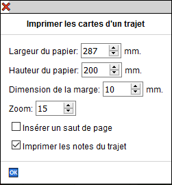"Largeur du papier" et "hauteur du papier": il s'agit de la largeur et hauteur de la zone imprimable du papier. Vous devez contrôler celle-ci avec votre imprimante.
"Dimension de la marge": c'est une zone autour de la carte et à l'interieur de celle-ci qui sera réimprimée dans la carte suivante.
"Zoom" : le zoom à utiliser pour les cartes. Il est indépendant du zoom utilisé pour afficher la carte avant le lancement de la commande. Pour des raisons de performance des serveurs de tuiles, il n'est pas possible d'utiliser un zoom plus grand que 15.
"Insérer un saut de page": quand cette case est cochée, un saut de page est inséré après chaque carte.
"Imprimer les notes du trajet" quand cette case est cochée, l'icône des notes est imprimée sur la carte.
Lorsque la boite d'édition est fermée avec le bouton "ok", la carte et les contrôles sont remplacés par des vues de la carte qui ont les dimensions souhaitées et deux boutons sont présents en haut à droite:

Le bouton 🖨️ lancera la commande d'impression de votre browser et le bouton ❌ annulera l'impression et réaffichera la carte.
Lorsque la commande d'impression du browser est fermée, les vues d'impression seront également fermées et la carte réaffichée.
Toutes les valeurs par défaut de la boite d'édition peuvent être modifiées dans le fichier TravelNotesConfig.json. Voir le guide d'installation.
Évitez de surcharger les serveurs de tuiles. Ne lancez cette commande que si vous en avez réellement besoin. Diminuer les dimensions du papier, la dimension de la marge et le zoom diminuera également le nombre de tuiles nécessaires.
Lorsque la boite d'édition est fermée, le programme calcule le nombre de tuiles nécessaires. Si ce nombre est trop important, la commande est arrêtée.
Quelques astuces pour imprimer avec un browser basé sur Chrome ( Brave, Vivaldi, MS Edge dernière version, Chromium, Chrome )
- Cochez la case "Insérer un saut de page"
- indiquez comme "hauteur de papier" la hauteur réelle de votre papier moins les marges d'impression haut et bas moins 1 mm
- pour les geeks: vous pouvez insérer un fichier css dans la page html avec une règle css @page pour fixer les dimensions, orientation et marges du papier:
@page {
size: A4 landscape;
margin: 7mm;
}
Quelques astuces pour imprimer avec Firefox
- Ne jamais cocher la case "Insérer un saut de page" ni utiliser une règle css @page. Si vous faites cela, le trajet ne sera pas imprimé correctement après le saut de page.
- indiquez comme "hauteur de papier" la hauteur réelle de votre papier moins les marges d'impression haut et bas moins 1 mm (à vérifier avec votre imprimante...). Vérifiez que tout est correct avec la commande "Aperçu avant impression" de Firefox.
Notes
Il y a deux sortes de notes: les notes de voyage et les notes de trajet. La position des notes de voyage est totalement libre et elles seront toutes affichées au début du livre de voyage. Les notes de trajet sont toujours positionnées sur un trajet et affichées avec l'itinéraire dans le livre de voyage.
Créer une note de voyage
Faite un clic droit à l'endroit souhaité sur la carte et sélectionnez "Ajouter une note de voyage" dans le menu contextuel.
Modifier l'ordre des notes de voyage
L'ordre des notes de voyage peut se modifier en faisant du glisser / déposer dans la liste des notes de voyage de l'interface utilisateur.
Créer une note de trajet
Faite un clic droit à l'endroit souhaité sur le trajet et sélectionnez "Ajouter une note à ce trajet" dans le menu contextuel.
Consulter une note
Faites un clic gauche sur l'icône de la note.
Modifier le contenu d'une note
Faites un clic droit sur l'icône de la note et sélectionnez "Éditer cette note" dans le menu contextuel.
Effacer une note
Faites un clic droit sur l'icône de la note et sélectionnez "Effacer cette note" dans le menu contextuel.
Déplacer l'icône d'une note
Faites un glisser / déposer de la note. Une ligne sera tracée entre l'icône de la note et le point choisi pour l'insertion de la note. La latitude et longitude de la note ne sont pas modifiées.
Modifier la latitude et la longitude d'une note
Déplacez l'icône de la note pour que la ligne soit visible. Déplacez la souris près de l'extrémité de la ligne. Lorsque un petit carré noir apparait sur celle-ci, faites un glisser / déposer de ce carré et de la ligne.
Une note de trajet a toujours sa latitude et longitude sur le trajet. Lorsque la ligne est déposée, le point le plus proche sur le trajet est recherché et l'extrémité libre de la ligne déplacé vers ce point.
Transformer une note de trajet en note de voyage
Faites un clic droit sur l'icône de la note et sélectionnez "Transformer en note de voyage" dans le menu contextuel. La transformation n'est possible que si aucun trajet n'est en cours d'édition.
Transformer une note de voyage en note de trajet
Faites un clic droit sur l'icône de la note et sélectionnez "Transformer en note de trajet" dans le menu contextuel. La transformation n'est possible que si aucun trajet n'est en cours d'édition. La note sera attachée au trajet le plus proche de celle-ci.
Créer une note pour chaque manœuvre du trajet
Faites un clic droit sur le trajet et sélectionnez "Créer une note pour chaque manœuvre du trajet" dans le menu contextuel. Une demande de confirmation est affichée. Pour chaque manœuvre du trajet, une note en SVG à partir des données OpenStreetMap sera créée.
La boite d'édition d'une note
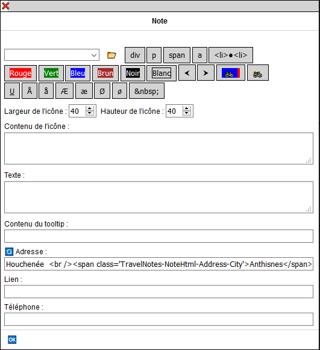Dans le haut de la boite, une liste déroulante permet de choisir des notes prédéfinies. Il est possible de modifier cette liste. Consultez le guide d'installation.
Le bouton :file_folder: vous permet de charger votre propre fichier avec des notes prédéfinies dans Travel & Notes. Consultez le guide d'installation. pour savoir comment créer ce fichier.
Les boutons div p span et a permettent d'ajouter les balises html <div>, <p>, <span> et <a> dans les zones d'édition. Tous les autres boutons sont modifiables et permettent aussi d'insérer du texte prédéfini dans les zones d'édition. Voir le guide d'installation.
Chaque zone d'édition peut contenir du texte simple ou du html, à l'exception de la zone "Lien".
La zone "Contenu de l'icône" sera utilisée pour représenter la note sur la carte et ne peut pas être vide (laisser cette zone vide empêcherait toute modification ultérieure de la note).
La zone "Adresse" est complétée automatiquement lors de la création de la note - Nominatim est utilisé pour géolocaliser les notes. Cette zone ne sera jamais modifiée par Nominatim par la suite, même si la note a été déplacée. Le bouton 🔄 permet cependant de demander une nouvelle géolocalisation à Nominatim.
Note de trajet prédéfinie "Icône SVG depuis OSM"
Lorsque l'on crée une note de trajet, il est possible de choisir "Icône SVG depuis OSM" dans la liste des notes prédéfinies. Dans ce cas, Travel & Notes va rechercher dans Openstreetmap l'intersection la plus proche située sur le trajet et va créer une icône en SVG reprenant les rues proches de cette intersection.
L'intersection sera placée au centre de l'icône et le contenu de celle-ci sera orientée en fonction du trajet suivi: la route par laquelle on arrive à l'intersection sera tournée vers le bas de l'icône.
L'adresse sera également modifiée: tous les noms de rue trouvés à l'intersection seront indiqués, séparés par un symbole ⪥. Le premier nom de rue sera toujours celui par lequel on arrive à l'intersection et le dernier nom celui par lequel on quitte l'intersection. Ce nom sera précédé d'une flèche indiquant la direction à suivre. Le nom de la commune / ville sera également ajouté. Si un nom de hameau ou de village est trouvé à proximité de l'intersection, celui-ci sera également ajouté entre parenthèses.
Quelques exemples de notes
Une note simple créée à partir d'une note prédéfinie
La boite de dialogue:
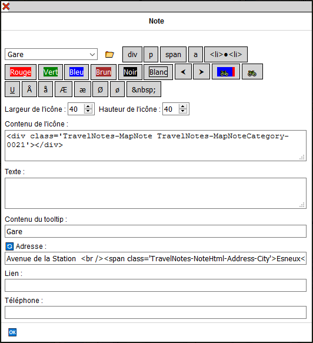Et le résultat dans TravelNotes:

Une note de trajet créée avec "Icône SVG depuis OSM"
Le trajet va de la droite vers la gauche. L'intersection des rues Tiyou d'Hestreu, Chemin des Patars et Basse Voie se trouve au centre de l'icône. Les rues sont orientées de telle sorte que une personne qui suit le trajet sur le terrain voit les rues dans la même position que sur l'icône. La rue par laquelle on arrive est le Tiyou d'Hestreu. Une flèche vers la droite indique qu'il faut tourner à droite dans la Basse Voie. Nous sommes dans la commune de Anthisnes et au hameau de Limont.
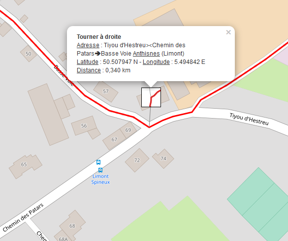Une note avec un texte sur une ligne
La boite de dialogue:
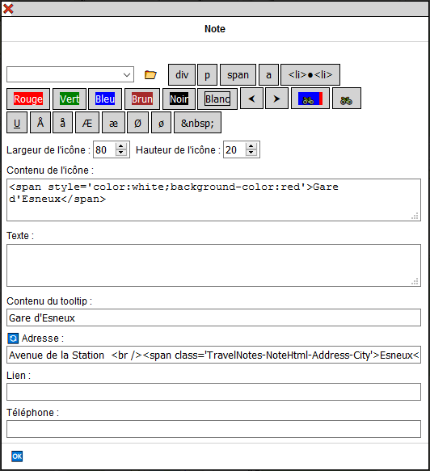Et le résultat dans TravelNotes:
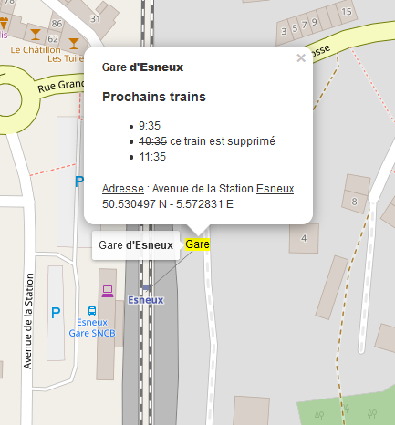Une note avec une photo
La boite de dialogue:
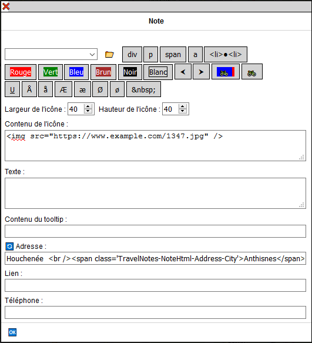Et le résultat dans TravelNotes:
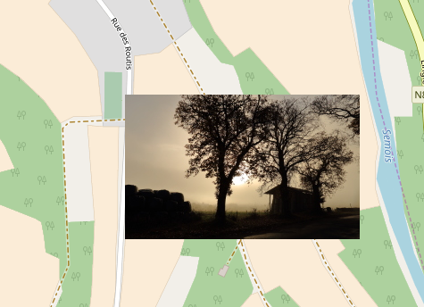Menu des fonds de carte
À gauche de l'écran une barre d'outils permet de choisir différents fond de cartes. Seul un petit rectangle noir est visible à l'écran:

Amenez la souris sur ce rectangle pour afficher toute la barre d'outils:
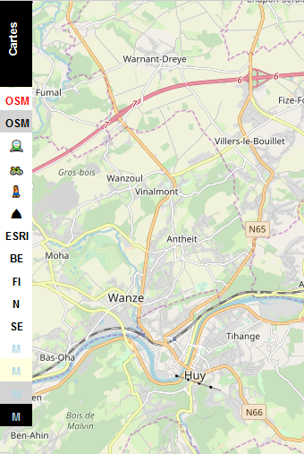Pour chaque fond de carte un bouton est présent dans la barre d'outils. La composition de la barre d'outils dépend des cartes définies dans le fichier TravelNotesLayers.json ainsi que des clefs d'accès qui ont été introduites. Consultez le guide d'installation.
Il est possible de se déplacer dans la barre d'outils en utilisant la roulette de la souris.
Livre de voyage
Cliquez sur le bouton 📋. Un nouvel onglet est créé avec le livre de voyage. Celui-ci contient tous les trajets ainsi que toutes les notes qui ont été créées sur la carte. Il est possible de choisir ce que l'on désire voir présent dans le livre de voyage via le menu en haut de page :
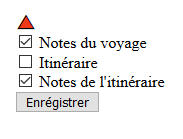Le bouton "Enrégistrer" permet de sauver le fichier html sur votre PC.
Préparer un voyage et le consulter depuis internet
Il est possible de préparer un voyage, sauver celui-ci dans un fichier sur un serveur web et consulter celui-ci depuis internet.
Pour consulter le voyage, il faut appeler TravelNotes en lui donnant en paramètre dans l'url l'adresse du fichier convertie en base64.
https://wwwouaiebe.github.io/leaflet.TravelNotes/?fil=aHR0cHM6Ly93d3dvdWFpZWJlLmdpdGh1Yi5pby9zYW1wbGVzL0xpZWdlL1N0YXRpb25Ub1lvdXRoSG9zdGVsLnRydg==
aHR0cHM6Ly93d3dvdWFpZWJlLmdpdGh1Yi5pby9zYW1wbGVzL0xpZWdlL1N0YXRpb25Ub1lvdXRoSG9zdGVsLnRydg== est l'équivalent de https://wwwouaiebe.github.io/samples/Liege/StationToYouthHostel.trv encodé en base64
Voir l'exemple sur la démo
Quand un tel fichier est affiché, il n'est pas possible de modifier celui-ci. Le contrôle n'est pas visible et tous les menus contextuels sont désactivés.
Viewer
Certains browsers anciens, surtout sur des mobiles, ne comprennent pas toujours tout le code JavaScript de Travel & Notes. Dans ce cas, vous pouvez essayer une version simplifiée de Travel & Notes qui permet juste la visualisation des fichiers. L'url doit être complétée de la même façon que pour la version normale:
https://wwwouaiebe.github.io/leaflet.TravelNotes/viewer/?fil=aHR0cHM6Ly93d3dvdWFpZWJlLmdpdGh1Yi5pby9zYW1wbGVzL0xpZWdlL1N0YXRpb25Ub1lvdXRoSG9zdGVsLnRydg==
Vous pouvez cependant ajouter &lay à la fin de l'url pour afficher également une barre d'outils reprenant les fonds de carte ne nécéssitant pas de clef d'accès.
https://wwwouaiebe.github.io/leaflet.TravelNotes/viewer/?fil=aHR0cHM6Ly93d3dvdWFpZWJlLmdpdGh1Yi5pby9zYW1wbGVzL0xpZWdlL1N0YXRpb25Ub1lvdXRoSG9zdGVsLnRydg==&lay
Voir l'exemple sur la démo
D'autres exemples:
Un extrait de mon dernier voyage en vélo de Dover à Chester
Les cartes du premier trajet de Dover à Chester